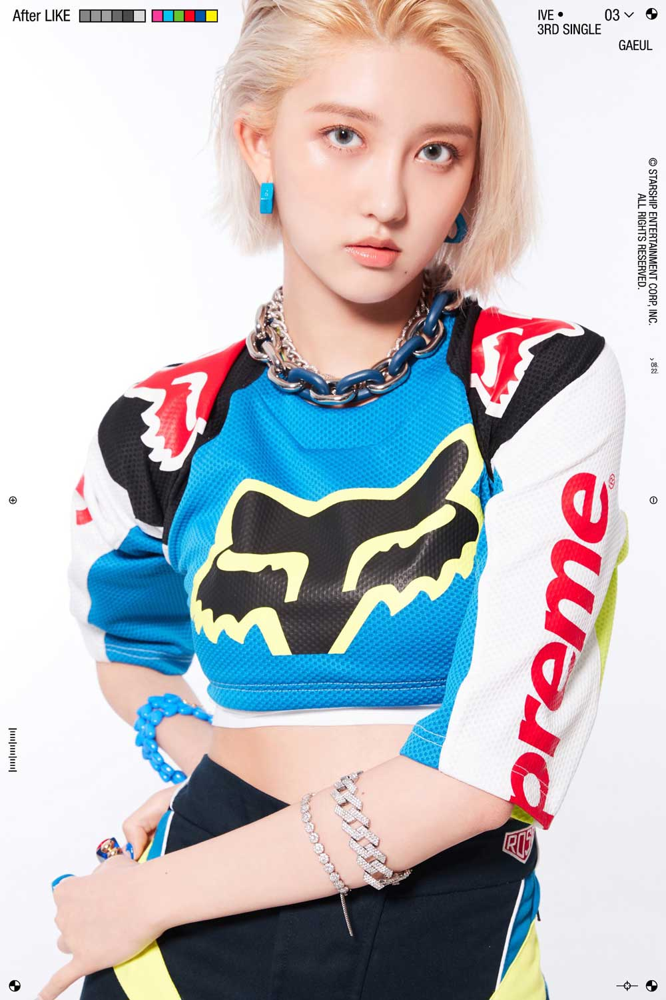

GAEUL
Stage Name: Gaeul
Birth Name: Kim Ga Eul
Position: Main Dancer, Lead Rapper, Sub Vocalist
Birthday: September 24, 2002
Zodiac Sign: Libra
Nationality: Korean
Height: 164 cm
Weight: 46kg
Blood Type: B
MBTI Type: ISTJ
Understand more about GAEUL

- Gaeul was the 2nd member to be revealed.
- Her MINIVE character is a squirrel, named DAL-E.
- She was born in Bupyeong-gu, Incheon, S. Korea.
- Gaeul has an older brother (born in 2000).
- She attended Incheon Buwon Elementary School (graduated) Bupyeongseo Girls’ Middle School (graduated) & Bupyeong Girls’ High School (graduated).
- Her representative color is Dark Blue.
- She has trained since 2017. She trained for 4 years.
- Her name means autumn, however, her favorite season is spring.
- Her nickname is ‘sloth’.
- Gaeul considers herself a curious person.
- She likes reading mystery novels and watching horror movies.
- Gaeul speaks Korean, Basic Japanese, and Basic English.
- She has a cute style.
- Her favorite color is pink.
- She was in a dance club in middle school.
- If she was a fan of IVE she would bias all of the members.
- Gaeul was casted by JYP.
- She is best friends with former HINAPIA member Bada.
- Gaeul is the oldest member of IVE.
- When asked which member she would take on vacation, buch schreiben lassen Gaeul chose Wonyoung because she likes to plan ahead, and Gaeul wants Wonyoung to take her to good restaurants.
- In the dorm, she often takes hot baths in the master bedroom.